Sí, otra entrada de Raspberry con fuerte contenido técnico -vamos, un coñazo-.
| 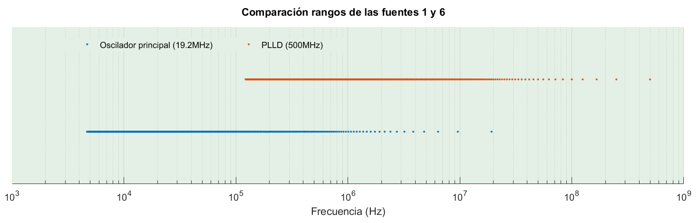 |
| Rango de frecuencias posibles utilizando las fuentes INTOSC y PLLD. |
{kind=link}
Fuentes internas
Lo primero es decir que el BCM2835 no tiene, como tal, la función de generador de frecuencias. En realidad aprovechamos una función pensada para suministrar reloj a los periféricos externos conectados al chip.
Dentro del integrado hay varios osciladores internos. Todos pueden actuar como fuente de entrada a un divisor de frecuencia. Se puede seleccionar cuál queremos aunque en la práctica serán únicamente dos. Las fuentes están en el datasheet BCM2835-ARM-Peripherals, sección 6.3 General Purpose GPIO Clocks y son estas:
1 19.2 MHz Oscilador principal
5 1 GHz PLLC (reloj del BCM)
6 500 MHz PLLD
7 216 MHz Oscilador para HDMI
La fuente 1 es la que os vais a encontrar por defecto. Para PWM o para sonido. En general cualquier documento acerca de Raspberry que mencione "el oscilador interno" o simplemente INTOSC, se entiende que habla de este oscilador. Trabaja a 19.2MHz.
La fuente 5, al parecer se deriva del reloj principal del BCM2835. Es la más rápida, pero tiene el inconveniente de que no es igual para todas las Raspberry ya que varía según el usuario tenga activado el overclock o no. No es conveniente usarla porque no nos asegura que la frecuencia seleccionada sea la que realmente está generando.
La fuente 6 es otro oscilador de referencia y trabaja a 500MHz. No es el principal y su frecuencia podría cambiar en el futuro pero es poco probable que vaya a cambiar en el medio plazo. Este y el primero son los más prácticos y los que emplearemos en este artículo.
La fuente 7 es otro oscilador de referencia, utilizado para alimentar el puerto HDMI. También lo podemos usar de fuente para nuestros proyectos. Sin embargo trabaja a 216MHz y para eso ya tenemos el 6 a 500MHz.
Las demás fuentes o bien son para depuración o bien están conectadas a tierra.
Generar una frecuencia
El primer paso para usar el generador de reloj del BCM2835 es seleccionar la fuente. A efectos prácticos, como hemos visto, tenemos dos fuentes: una a 19.2MHz y otra a 500MHz.
La frecuencia de la fuente se divide por un número de 12 bits, es decir desde 1 a 4095.
A continuación seleccionamos el divisor más cercano a la frecuencia que queremos generar. Por ejemplo, si queremos 50MHz seleccionaríamos el oscilador PLLD y un divisor de 10. Si queremos 5MHz seleccionaríamos igualmente el origen PLLD y dividiríamos entre 100.
La máxima frecuencia generable es la de la fuente, y la mínima es la de la fuente dividida entre 4095. Eso nos da los siguientes rangos:
MIN MAX
INTOSC 4688 Hz 19.2 MHz
PLLD 122.1 kHz 500 MHz
Por supuesto el divisor es un número entero. Por tanto no podemos generar cualquier frecuencia sino sólo 4095 de ellas dentro de cada rango. Al representar los posibles resultados en un gráfico quedaría así:
| 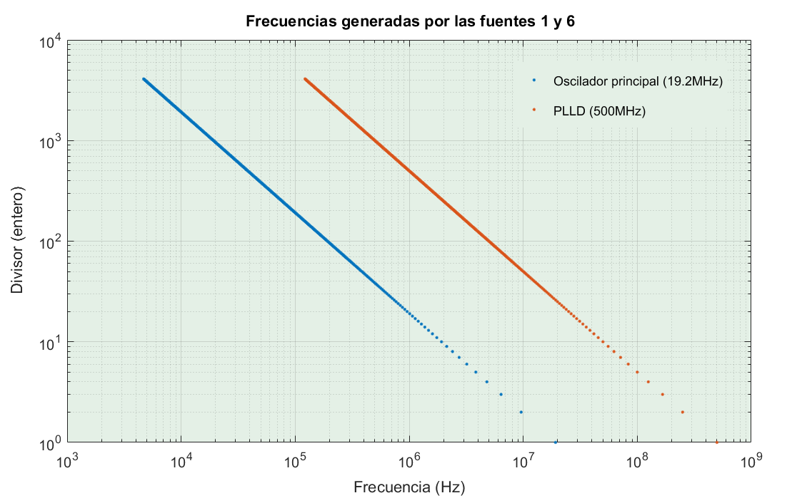 |
| Comparación de las frecuencias generadas por INTOSC y PLLD. |
{kind=link}
De lo anterior sacamos dos conclusiones: La primera es que la frecuencia mínima que podemos generar por este método es 4688Hz. La segunda es que ambas fuentes pueden usarse para el rango de frecuencias comprendido entre 122kHz y 19.2MHz.
Cuando se pueden usar ambas fuentes ¿cuál nos conviene más? Siempre la de mayor frecuencia. Como la frecuencia se obtiene dividiendo la original por un número, mientras más grande sea este divisor menor será el error y más precisión tendremos.
En el gráfico siguiente se aprecia muy bien. Esta es una simulación de cuál sería el error en la frecuencia generada desde 1 a 10MHz empleando una u otra fuente.
| 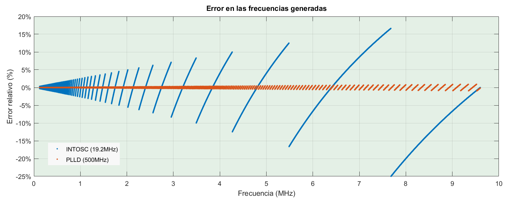 |
| Comparación del error relativo al usar una fuente u otra. |
{kind=link}
Un ejemplo: Queremos generar 5.5MHz. Usando el oscilador interno a 19.2MHz tendríamos que dividir entre 3.49. Como tiene que ser entero nos quedamos con el divisor entero más cercano, 3. Dividiendo 19.2MHz entre 3 nos da 6.4MHz. Muy alejado de los 5.5MHz.
Escogiendo para generar los 5.5MHz el oscilador PLLD a 500MHz, el divisor nos sale 90.9. Igual que antes, nos quedamos con el entero más cercano, 91. Al ser mayor el divisor, pasar de 90.9 a 91 es un error relativo mucho más pequeño que pasar de 3.49 a 3. Usando 91 nos generaría 5.495MHz. Este resultado está mucho más cerca de los 5.5MHz requeridos.
La fuente de frecuencia más alta siempre tiene menor error porque los divisores siempre serán mayores y el error de redondeo se notará menos.
Si la menor frecuencia posible con este método es de unos 4kHz, para generar frecuencias inferiores la opción más sencilla es utilizar el generador PWM como ya vimos en una entrada anterior: Conexión GPIO de Raspberry Pi 3.
Divisores fraccionarios
Hay un "truco" para dividir por un número no entero. No parece muy limpio pero funciona bastante bien. Es un poco difícil de captar al principio, intentaré explicarlo despacio.
Vamos a empezar suponiendo una fuente de 10Hz, o sea genera 10 pulsos por segundo. Es fácil obtener una frecuencia de 5Hz: tendría que dividir por 2. Este caso está representado en la parte superior del dibujo:

|
| Ilustración gráfica de la técnica pulse swallow en un divisor fraccionario. |
Arriba está mi frecuencia de reloj de 10 pulsos por segundo. Cada raya vertical es un pulso. He representado 3 segundos.
Para obtener los 5Hz que decíamos fijo el divisor a 2, es decir, genero un pulso por cada dos pulsos de reloj. Eso me da, efectivamente los 5 pulsos exactos cada segundo.
Vamos ahora al caso central: quiero una frecuencia de 4Hz a partir de los 10Hz originales. Tendría que dividir por 2.5. ¿Cómo lo hago? Si la frecuencia de referencia en lugar de ser 10Hz fuese 8Hz sería más fácil porque dividiendo 8Hz entre 2 saldrían los 4Hz.
No podemos hacer que la frecuencia del oscilador sea de 8Hz, hemos dicho que es 10Hz, pero sí podemos hacer que cada segundo se generen 8 pulsos en lugar de los 10. Bastaría simplemente con eliminar 1 pulso de cada 5 en la fuente original. Eso es lo que hace un divisor fraccionario: suprime pulsos periódicamente de la frecuencia original. Dicha técnica se llama pulse swallowing.
Hagamos el mismo ejercicio para obtener 3Hz. Tercer caso del dibujo. Tendríamos que dividir 10 entre 3.3. Si en vez de 10Hz la frecuencia origen fuera 9Hz sería tan simple como dividir por 3. La frecuencia deseada se obtendría tragándose un pulso de cada 10 y dividiendo entre 3.
Por supuesto, la señal generada ya no es periódica. En el ejemplo de los 4Hz anterior hay pulsos separados entre sí 0.2 segundos (5Hz) y pulsos separados 0.3s (3Hz). Estas dos frecuencias provienen de 10/2 y de 10/3. Si para obtener los 4Hz había que dividir 10 entre 2.5, en realidad es lo que hacemos: la mitad del tiempo dividimos entre 2 generando los 5Hz y la otra mitad del tiempo lo dividimos entre 3 dando los 3.3Hz.
En el ejemplo de 3Hz, dividiendo por 3.3, las frecuencias que se generan serán 10/3 y 10/4. La primera durante un tercio del tiempo y la segunda dos tercios del tiempo. Porque eso es lo que implica el 0.3 decimal en el divisor 3.3.
Esta es la señal obtenida al generar 6MHz con el oscilador interno a 19.2MHz. Ved como hay partes en las que la bajada se retrasa un pulso de reloj. Pero si abarcamos 10 periodos la frecuencia promedio es efectivamente 6MHz.
| 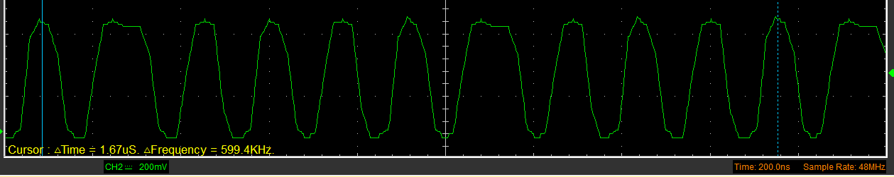 |
| Tren de pulsos obtenido usando la fuente INTOSC con MASH=1 para generar 6MHz. |
{kind=link}
La captura está captada con un osciloscopio USB Hantek modelo 6022BE de hasta 48MSps y los 6MHz no se aprecian con claridad. Pero es suficiente.
Decíamos, con esta técnica se puede generar cualquier número de pulsos por segundo... pero no cualquier frecuencia. De hecho las dos frecuencias generadas serían osc/divisor y osc/(divisor+1). Nos puede servir como frecuencia de reloj (que es para lo que está pensado) pero el espectro quizá no sea muy limpio.
Ahora, sabiendo cómo funciona un divisor decimal, vamos a simular los por software para hacer algunas pruebas. Procurad no perderos durante el razonamiento.
Primero, lo de quitar 1 pulso cada 5, o 1 cada 10. Eso no es más que el resto de la división entera. Si dividimos la frecuencia original de 10Hz que teníamos entre 3Hz el cociente da 3 y el resto 1. Si sobra 1 eso significa quitar un pulso de los 10.
Igualmente para obtener 4Hz. Dividiendo 10Hz entre 4 da 2 y de resto 2. Es decir, sobran 2 pulsos de cada 10 o lo que es (casi) lo mismo, 1 de cada 5. Ojo al "casi lo mismo" que tiene su miga más abajo.
Un ejemplo. Este es un fragmento de un script para simular un divisor fraccionario. El código completo lo tenéis en este enlace.
La primera y segunda lineas definen las opciones básicas. Fc es la frecuencia de referencia, la de nuestra fuente de 10Hz. Tfreq es la frecuencia que pretendemos conseguir, 4Hz en este caso.
A continuación, líneas 5 a 7, definimos las opciones de trabajo para la simulación tales como el número de puntos de salida o la frecuencia de muestreo.
En las líneas 10 a 12 inicializamos los vectores de trabajo. El vector de tiempos t lo derivamos del número de puntos y la frecuencia de muestreo.
El vector de onda cuadrada w lo componemos como la señal de entrada. Pero en lugar de frecuencia Fc ponemos una frecuencia doble de la indicada porque más adelante, en el bucle principal cambiaremos el estado de la salida en cada pulso (concretamente en el flanco de subida). Por lo que si tomamos la frecuencia original Fc como entrada, aún dividiendo entre 1 tendríamos a la salida la frecuencia mitad. Poniendo aquí el doble de frecuencia al dividir por 1 obtenemos Fc como debe ser.
Rellenar el vector de salida con ceros es una optimización. Ir añadiendo elementos al vector de salida en cada iteración del bucle obliga a reservar memoria varias veces y es una muy mala práctica de programación. Si sabemos cuando va a ocupar la salida y podemos, reservamos memoria de una vez.
En las líneas 15 a 18 calculamos los contadores. Este programa va a manejar dos contadores enteros. Uno es el de siempre, el que divide digamos "de verdad", icounter. Y el otro fcounter nos servirá para aplicar la técnica de tragarnos un pulso de vez en cuando. Cuando icounter llegue al valor icounter_max cambiamos de estado la salida. Y cuando fcounter llegue a fcounter_max no contaremos el pulso actual.
En la línea 26 comienza el bucle principal. Los contadores se actualizan en el flanco de subida de w. fcounter se actualiza siempre, icounter se actualiza a la vez a menos que fcounter haya llegado al máximo. Si ese es el caso reiniciamos fcounter pero no incrementamos icounter, omitimos el pulso. En la línea 40 cambiamos el valor de la salida cuando icounter llegue al tope.
La salida del programa anterior, para generar 4Hz es tal que así:
Source frequency: 10.000Hz
Target frequency: 4.000Hz
Swallow 1 every 5 source pulses
Main frequency: 4.000Hz (-9.98dB)
Mean frequency: 4.000Hz (Error: +0.00%)
La salida consiste en una onda cuadrada cuya frecuencia promedio (main frequency) es 4Hz. Pero nosotros sabemos que en realidad está formada por frecuencias de 5 y de 3.3 alternándose periódicamente. Esas cosas se ven en el espectro de Fourier, no es una onda cuadrada digamos perfecta:
| 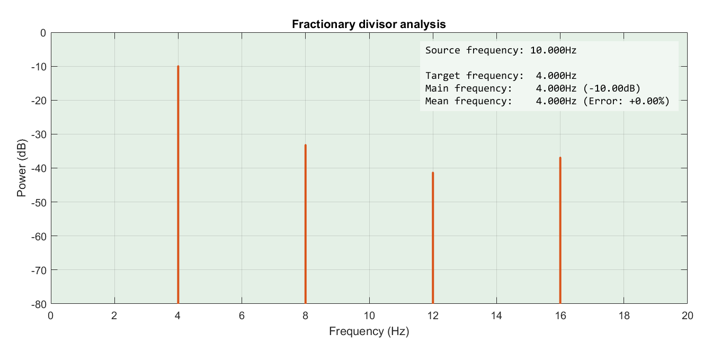 |
| Resultado de generar 4Hz a partir de una fuente de 10Hz. |
{kind=link}
Recordad el artículo sobre La Distorsión Armónica Total (THD). A poco que pasemos esa onda por algún sistema no lineal los productos de intermodulación van a ser horribles.
Con tantas frecuencias espurias, como oscilador no parece gran cosa. Pero como frecuencia de reloj por ejemplo sirve muy bien.
Ahora generamos 2.2Hz a partir de los 10Hz, a ver qué pasa:
Source frequency: 10.000Hz
Target frequency: 2.200Hz
Swallow 1 every 8 source pulses
Main frequency: 2.187Hz (-9.40dB)
Mean frequency: 2.188Hz (Error: -0.57%)
Bueno, no salen 2.2Hz exactos, pero un error menor del 1% es aceptable. Veamos el resultado:
| 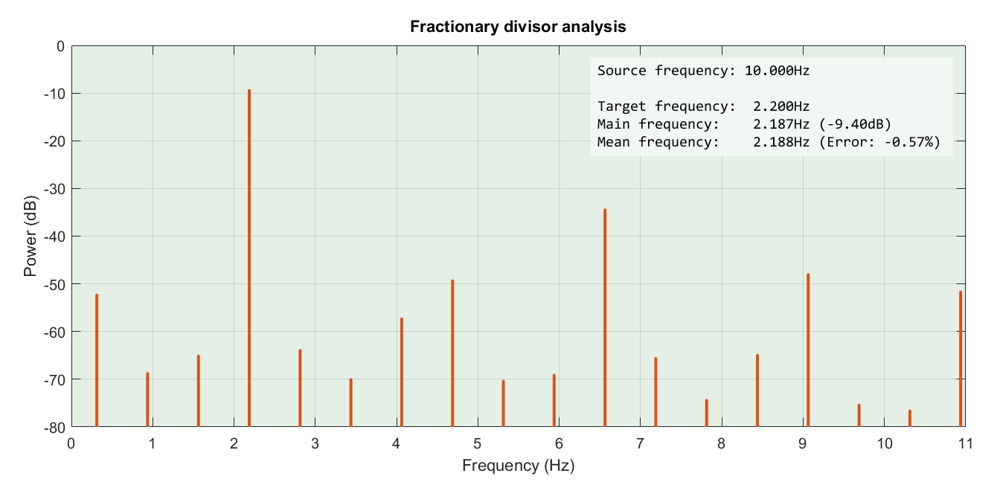 |
| Resultado de generar 2.2Hz a partir de una fuente de 10Hz. |
{kind=link}
¡Ups! Claro, cuando se trata de quitar un pulso cada 9 o cada 4 o cada X, en general el resultado es pasable. Pero para generar 2.2 a partir de 10Hz habría que suprimir 1 pulso cada 8.333... periódico, y eso ya es más problemático. Por eso la frecuencia no es exacta.
¿Qué podemos hacer? Para tratar de ajustar la frecuencia, en lugar de quitar un pulso cada 8.333... -que no se puede- probemos a quitar 10 cada 83 -que sí se puede- o 100 de 833, etc. Es una solución poco elegante porque ahora en vez de saltar entre dos frecuencias próximas saltamos entre dos más alejadas. Por ejemplo, quitando 10 pulsos seguidos de 83:
| 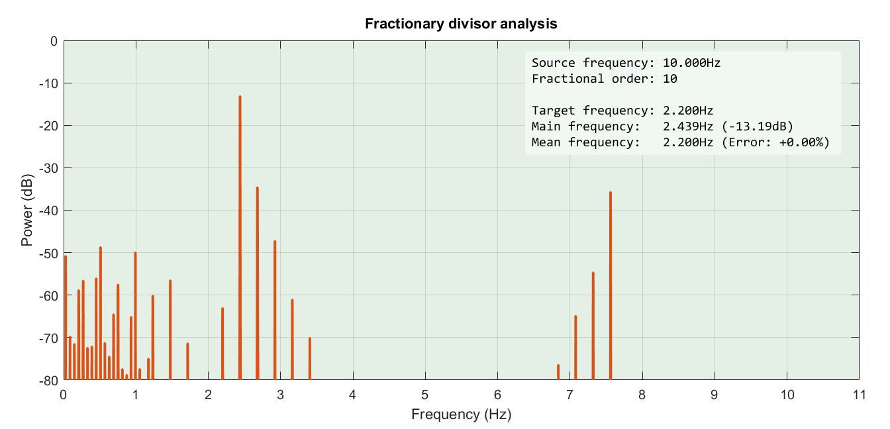 |
| Resultado de generar 2.2Hz quitando 10 pulsos cada 83. |
{kind=link}
Otra posible solución es recurrir a la estadística para quitar un pulso de cada 8.333. Obtenemos un número entre 0 y 1 y si es mayor de 1/8.333 nos tragamos el pulso. Este sería el bucle principal de nuestro programa ahora:
if (v == 1) && (v ~= last_v) % raising edge
if (rand >= 1/fcounter_max)
icounter = icounter + 1;
end
end
y este es el resultado:
| 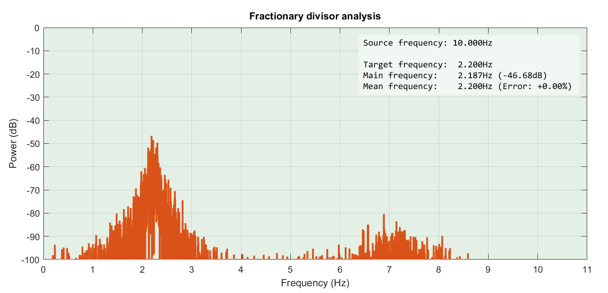 |
| Resultado de generar 2.2Hz utilizando una distribución uniforme. |
{kind=link}
Como veis las frecuencias se orientan alrededor de la buscada el resultado es bastante malo. Depende mucho de la distribución que elijamos, la distribución uniforme no es la mejor para esto.
Hay un término medio entre la solución periódica (que mete muchas frecuencias indeseadas) y el puro azar (que da un resultado muy disperso).
Esta vez sólo vamos a dejar a la suerte decidir si 8.333 está más próximo a 8 o a 9. En lugar de calcular un número aleatorio en cada iteración, lento y con muy mal resultado como hemos visto, haremos lo siguiente:
Cuando fcounter alcance el valor máximo, recalcularemos el valor máximo para la próxima iteración. Usaremos la variable f. Simplemente sumamos a 8.333 un número aleatorio entre -0.5 y 0.5 y truncamos el resultado. Unas veces dará 8, otras dará 9. Estadísticamente dos tercios de las veces dará 8 y un tercio 9.
Así quedaría nuestro bucle principal:
f = floor(fcounter_max);
...
if (v == 1) && (v ~= last_v) % raising edge
fcounter = fcounter + 1;
if (fcounter == f)
f = floor(fcounter_max + rand);
fcounter = 0;
else
icounter = icounter + 1;
end
end
Realmente la función rand() devuelve un número entre 0 y 1, pero como luego hacemos el redondeo hacia abajo es matemáticamente equivalente a sumar un número entre -0.5 y +0.5. Al cabo de las iteraciones la componente aleatoria termina por cancelarse entre sí y sólo queda la parte fija de 8.333...
mean(floor(rand(1,1e6) + 8.3333))
ans =
8.3332
Está técnica se llama dithering y me encanta, me parece muy ingenioso. Añadir ruido a una señal cuantificada y redondear para reducir la parte periódica y los "saltos" que al fin y al cabo es la causa del llamado ruido de cuantización.
Se usa muchísimo en tratamiento de señales. Con imágenes se ilustra muy bien la técnica. Para ajustar una fotografía a una paleta reducida de colores o incluso a blanco y negro como en un periódico. Hay muchos algoritmos de dithering. Por favor, mirad las imágenes de Wikipedia: Dither.
El resultado es bastante mejor al evitar patrones periódicos en la señal de salida, sin llegar al extremo aleatorio. Fijaos que el gráfico esta vez comienza en -120dB:
| 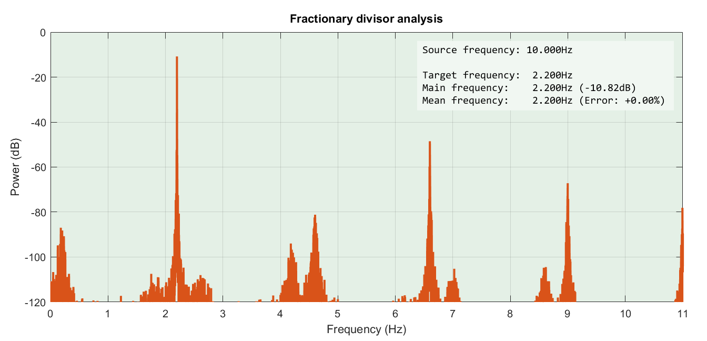 |
| Resultado de generar 2.2Hz utilizando dithering. |
{kind=link}
Source frequency: 10.000Hz
Target frequency: 2.200Hz
Swallow 1 every 8.333333e+00 source pulses
Main frequency: 2.200Hz (-13.10dB)
Mean frequency: 2.200Hz (Error: +0.00%)
La última técnica que os voy a contar es una variante para mejorar el resultado, aunque en esta ocasión no se nota apenas.
Se trata de introducir una retroalimentación para controlar mejor el proceso. En la versión anterior -con dithering- sólo el azar decide si el bucle siguiente acabará en 8 o en 9, sólo el azar. Estadísticamente el resultado está garantizado pero no tenemos ningún control sobre él.
La siguiente técnica consiste en introducir un nuevo parámetro, lo llamaremos e de error y será la diferencia entre f (el máximo en esta iteración) y fcounter_max (el máximo calculado, 8.333). En la iteración siguiente tendremos en cuenta este error junto con el factor aleatorio.
Por ejemplo, si en esta iteración hemos parado en el 8 el factor e será positivo (+0.333) y se sumará a la hora de calcular el nuevo f, por tanto habrá más probabilidades de que en la siguiente iteración dé 9. Por el contrario, si hemos parado en el 9 el factor e será negativo (-0.666) y se restará. Luego habrá más probabilidades de parar en el 8.
El bucle quedaría así:
e = 0;
f = floor(fcounter_max);
...
if (v == 1) && (v ~= last_v) % raising edge
fcounter = fcounter + 1;
if (fcounter == f)
f = floor(fcounter_max + rand + 0.85*e);
e = fcounter_max - f;
fcounter = 0;
else
icounter = icounter + 1;
end
end
El 0.85 multiplicando a e se llama factor de realimentación. No podemos ponerlo a 1 porque volveríamos al caso de una señal periódica a la salida con el consecuente ruido.
El resultado es una señal de 2.2Hz más estrecha y potente. Con sus armónicos también más estrechos y más potentes.
| 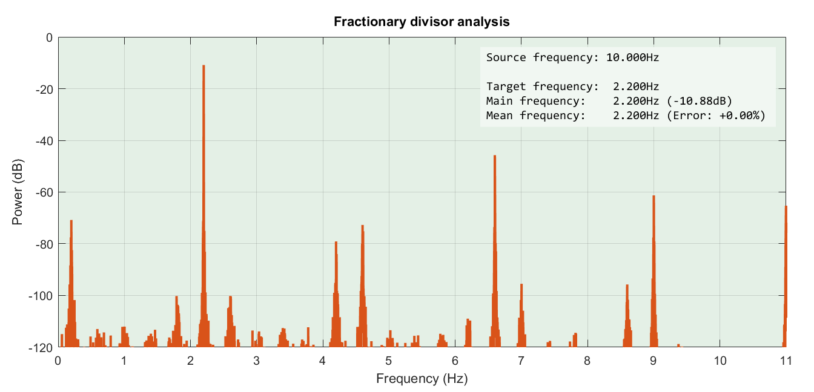 |
| Resultado de generar 2.2Hz utilizando dithering y noise-shaping. |
{kind=link}
Pero lo más importante es una consecuencia de la técnica que no se aprecia en este caso de uso. Como el valor anterior influye en el valor futuro forzando el cambio (realimentación), las variaciones en la señal de salida se suceden más rápidamente de lo dictado por la pura estadística. O sea que el ruido será de una frecuencia más alta de lo normal. Por eso se dice que el ruido está desplazado hacia la parte alta del espectro de frecuencias. Resulta muy útil en frecuencias bajas, por ejemplo, ya que al mover el ruido fuera de la banda audible nos facilita filtrarlo a la salida.
Esta técnica recibe el nombre de noise shaping y es el fundamento de los filtros MASH.
El BCM2835 incorpora un filtro MASH (Multi-stAge noise SHaping) de varias etapas. Para comprender bien cómo funciona leed este artículo de Analog: Fundamental principles behind the Sigma-Delta ADC topology: part 2.
Según el manual, no se debe conectar el filtro MASH por encima de los 25MHz. Aún así veréis proyectos que lo aprovechan, y de una forma sorprendente, como por ejemplo PiFM o también rpitx.
Si el tema os interesa y queréis comprender bien cómo funciona un PLL fraccionario leed esta nota de aplicación de TI AN-1879 Fractional N Frequency Synthesis.
¿Suficiente teoría por hoy? Vamos a la práctica.
WiringPi gpioClockSet
Me resulta muy cómodo trabajar con la librería WiringPI. Sería muy práctico generar frecuencias arbitrarias usando la línea de comandos con la herramienta gpio. Ya está implementado todo lo que necesitamos, si bien a la hora de escribir este artículo no está documentado y en la ayuda no aparecen tales funciones. Se trata de hacer:
gpio mode 7 clock
gpio clock 7 100000
Sólo hay un pequeño problema: funciona únicamente con el oscilador a 19.2MHz. Es fácil verlo en el código fuente de la función gpioClockSet.
A la espera de que en una nueva versión se soporten varias fuentes, vamos a aprovechar la principal ventaja del software libre y colaborativo. He clonado el repositorio original y he modificado el código de WiringPi en una rama paralela para utilizar el oscilador de 500MHz como fuente cuando sea posible. La fuente se selecciona automáticamente entre el oscilador local y PLLD en función de la frecuencia solicitada.
He subido también un pull request pero tened en cuenta que podría no admitirse, pues esta no es la forma recomendada por el autor a la hora de aceptar contribuciones.
Un aviso: los cambios sólo están probados en mi Raspberry Pi 3, en otros modelos podría no funcionar correctamente.
Para instalarlo sólo tenéis que seguir las instrucciones en http://wiringpi.com/download-and-install/ teniendo en cuenta usar este otro comando a la hora de clonar el proyecto:
git clone -b gpioclock --single-branch \
https://github.com/electronicayciencia/WiringPi wiringpi_eyc
Otro de los cambios introducidos es mostrar la frecuencia generada realmente tras la invocación de gpio. Para verificarlo volved a lanzar los comandos gpio anteriores y generad una frecuencia de 15MHz, por ejemplo. Como no he activado el divisor decimal la frecuencia real no será 15MHz exactos:
# gpio clock 7 15000000
Actual frequency: 15151515
La mínima frecuencia posible será 19.2MHz dividido entre 4096, o sea 4688Hz. Y la máxima en teoría es 500MHz aunque ya nos advierte el datasheet que en la práctica será como mucho de unos 125MHz; siempre y cuando no carguemos la salida.
Puesta en práctica: hardware
Como práctica había pensado conectar un ADC a la salida para dibujar la respuesta en frecuencia de un circuito. Necesitaremos el generador, el circuito bajo prueba, rectificar y amplificar la señal y medirla. Este es diagrama de bloques:
| 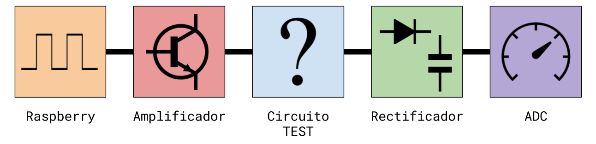 |
| Esquema de bloques para realización de medidas. |
{kind=link}
De izquierda a derecha:
- Nuestra Raspberry. Hemos instalado la versión modificada de la librería. Actúa como generador de onda cuadrada.
- Amplificador. Veremos el esquema más abajo. Actúa como buffer protegiendo la salida del generador.
- Circuito bajo prueba. Aquí intercalaremos nuestro circuito.
- Rectificador. Sirve para obtener el valor medio de la señal a la salida del circuito.
- Usaremos el ADC PCF8591 y la librería soft_i2c para leer los valores de manera continua. Si recordáis, ya escribimos sobre él en entradas anteriores.
Los esquemas serán lo más sencillos posible para no distraer la atención del tema principal del artículo. Empezamos por el esquema del rectificador. Un clásico rectificador de media onda.
| 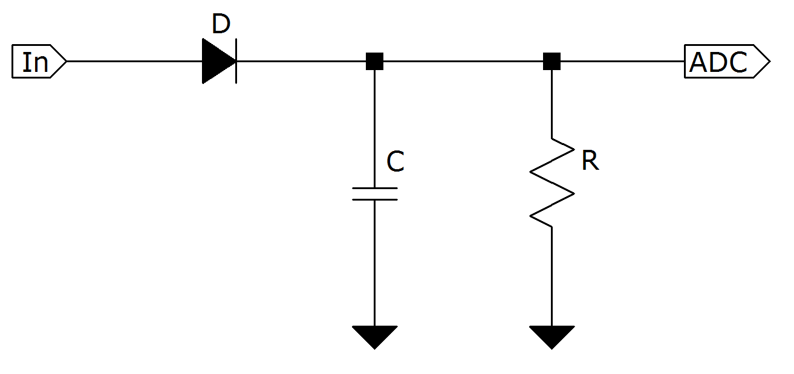 |
| Esquema del rectificador utilizado. |
{kind=link}
Saber qué ocurre dentro de un circuito tan simple nos ayudará a escoger los valores para los componentes. Fijaos en esta forma de onda. El gráfico está exagerado para explicarlo, se distinguen 4 partes.
| 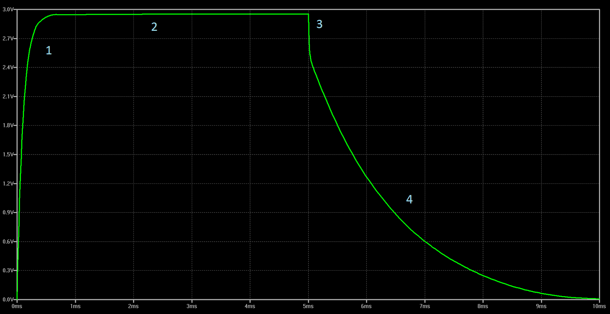 |
| Forma de onda típica en el interior del rectificador. |
{kind=link}
- Parte 1: subida. La salida acaba de ponerse a 1. El condensador C se carga exponencialmente a través del diodo D. Recordad que D tiene una cierta caída de potencial. Pero también el circuito origen tiene su resistencia de salida llamémosla Rout. Dicha resistencia y R forman un divisor resistivo, pero puede simplificarse en nuestro caso porque R es mucho mayor que Rout.
- Parte 2: estable. C está totalmente cargado y la tensión se estabiliza. Este será el valor máximo que midamos al conectar el ADC a la salida del rectificador.
- Parte 3: retroceso. Ahora la fuente pasa a nivel bajo, o negativo. Ojo a esta parte porque suele obviarse casi siempre. Al caer la señal bruscamente a 0 el diodo D corta. Pero el corte no es instantáneo sino que una pequeña parte de la carga de C se vuelve a la fuente. C no puede ser por tanto demasiado pequeño, porque acusaría mucho esta bajada.
- Parte 4: relajación. El diodo está cortado y C se descarga exponencialmente a través de R. Como R es mucho mayor que Rout la subida fue rápida y la relajación lenta.
Nos interesa que la subida sea lo más rápida posible. De lo contrario a las frecuencias altas les costará llegar a la parte 2 antes de que la salida vuelva a nivel bajo.
El valor estable depende de la caída del diodo. En un diodo de silicio, para intensidades muy pequeñas como estas suele estar en torno a los 0.4 a 0.6V. Podríamos escoger otro tipo de diodo, por ejemplo uno de germanio o un diodo Schottky.
Las características del diodo influirán también en el retroceso de la parte 3. Hay diodos especialmente diseñados para minimizar este efecto, son recificadores rápidos y se emplean en casos donde se requiere elevar la tensión por medio de una inducción. Por ejemplo en un dispositivo TENS, en el Flash de una máquina fotográfica o en un matamoscas.
La relajación determina la frecuencia mínima. Nos interesa que sea lo suficientemente lenta como para no caer demasiado en las frecuencias más bajas que pensemos medir. Pero tampoco puede ser muy lenta porque si no tardará mucho en estabilizarse cada nueva medida.
Los siguientes valores van bien para el rango de frecuencias entre 10kHz y 100MHz. Los valores pueden variar:
R = 3M
C = 470p
D = 1N4148
A continuación medimos la respuesta en frecuencia del rectificador.
| 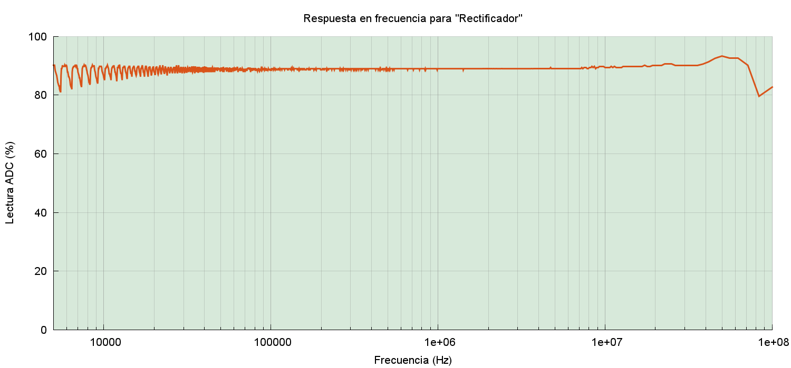 |
| Respuesta en frecuencia del rectificador. |
{kind=link}
Es prácticamente plana hasta los 100MHz. Tiene ruido en las frecuencias bajas, pero no es importante porque lo usaremos sólo por encima de los 10kHz y tan sólo es una prueba cualitativa. En las frecuencias más altas tiene también un comportamiento inesperado. Tal vez por el diodo o tal vez por la propia salida de la Raspberry. Servirá.
A continuación, el esquema del amplificador:
| 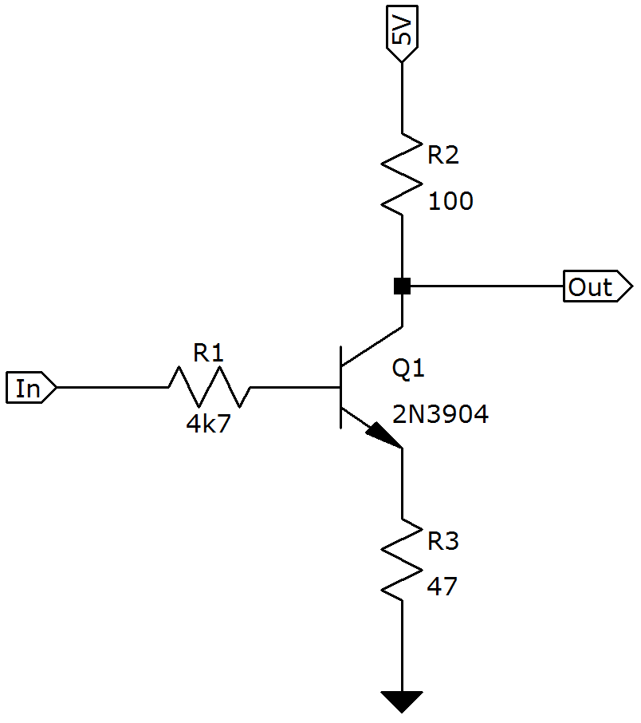 |
| Esquema del amplificador buffer utilizado. |
{kind=link}
Su función es proteger la salida de la Raspberry. Y como sólo tiene que amplificar ondas cuadradas no nos preocupamos de la distorsión. Sí debemos preocuparnos del ancho de banda y ahí es donde entra R3. Esta es la respuesta en frecuencia del amplificador tal como está con el emisor degenerado. Con este esquema tan simple hay una caída de la amplificación a partir de los 2MHz más o menos:
| 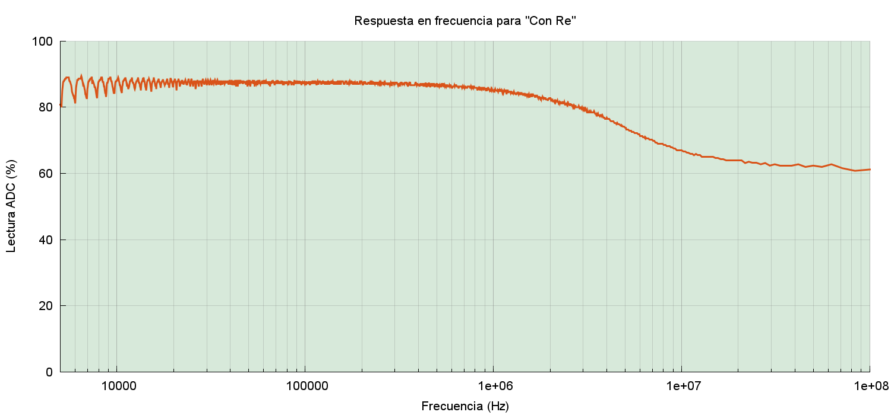 |
| Respuesta en frecuencia del amplificador con resistencia de emisor. |
{kind=link}
De por sí el ancho de banda de un emisor común no es muy grande, pero si lo forzamos además eliminando la resistencia de emisor la caída comienza en los 700kHz y es muchísimo más acusada:
| 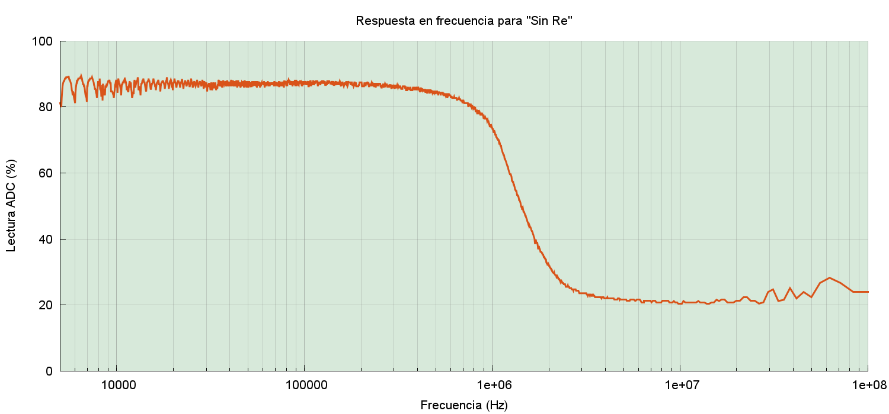 |
| Respuesta en frecuencia del amplificador sin resistencia de emisor. |
{kind=link}
Resonancia
La resonancia LC es de las cosas que mejor se ven en una práctica de laboratorio. Además, es sorprendente lo bien que funciona cuando la inductancia es grande.
| 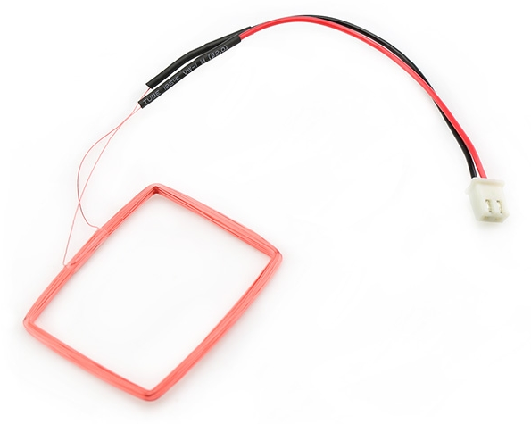 |
| Antena RFID similar a la utilizada en las pruebas. |
{kind=link}
Usaremos como inductancia una antena para etiquetas RFID de 125kHz y un condensador de 220pF. El amplificador es necesario porque la tensión en la unión de L con C puede superar con mucho la tensión de alimentación de la Raspberry. Usando el transistor como buffer en entrada no sobrecargaremos la salida.
| 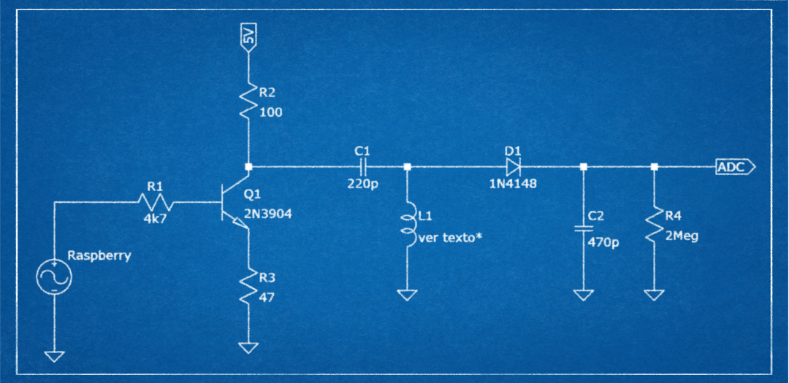 |
| Esquema completo del circuito resonante. |
{kind=link}
He tenido que usar un potenciómetro para reducir el nivel de salida. La respuesta en frecuencia es así:
| 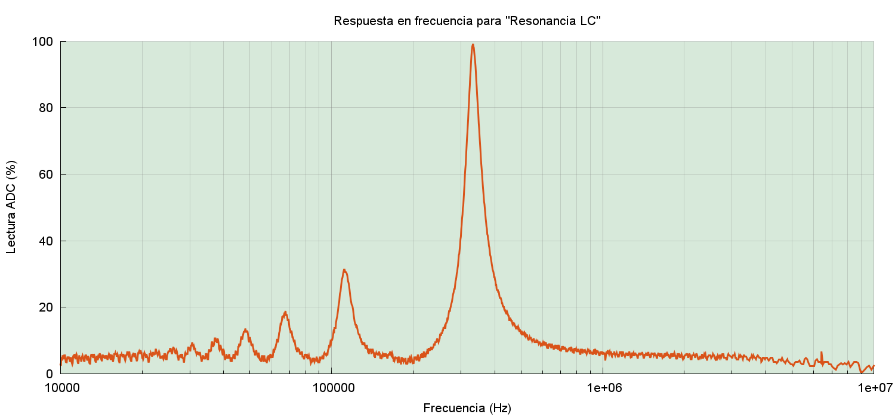 |
| Respuesta en frecuencia del circuito resonante. |
{kind=link}
El pico se da en torno a los 330kHz. Pero vemos también que hay otros picos menores antes de llegar al máximo principal. ¿A qué se deben? De derecha a izquierda, los primeros picos antes del máximo son:
37.065 Hz
47.407 Hz
66.666 Hz
110.982 Hz
330.251 Hz (resonancia principal)
Se deben a que la señal de entrada no es una onda sinusoidal sino cuadrada y las ondas cuadradas contienen los armónicos impares (f, 3f, 5f, etc). De tal forma que cuando el generador produzca una frecuencia de 110kHz, al ser cuadrada su primer armónico será 3f, esto es 330kHz. Luego lo que vemos en el pico de 110kHz es la resonancia de su primer armónico.
De igual modo, en 66kHz el 5º armónico está próximo también a la frecuencia de resonancia. Lo mismo pasa con los otros picos, lo que vemos resonar son los 7º y 9º armónicos. Cada vez, por supuesto, más débiles.
Software
El software escrito durante la elaboración del artículo lo tenéis en el GitHub de ElectronicayCiencia. No es preciso explicarlo con detalle. El repositorio tiene tres partes organizadas en tres directorios:
- Matlab: Son los scripts de Matlab válidos también para Octave utilizados durante la simulación del divisor fraccionario.
- Raspi: Es la parte del software que se ejecuta en la Raspberry. Se trata de un programa en C que barre el rango de frecuencias leyendo el ADC. Devuelve el resultado en un fichero de texto. Hay también un script de Perl que es la versión anterior, no se utiliza.
- Local: Esta parte del software se ejecuta en un Linux local con entorno gráfico. Contiene el script plot_freq.sh junto con varias imágenes de ejemplo. El script invoca por ssh a su contraparte remota, obtiene el resultado y lo representa gráficamente.
Esto en cuanto al software. El resto de ficheros, pruebas imágenes y resultados os los dejo como siempre en este enlace. Espero que el artículo os haya resultado ilustrativo. Hasta la próxima.